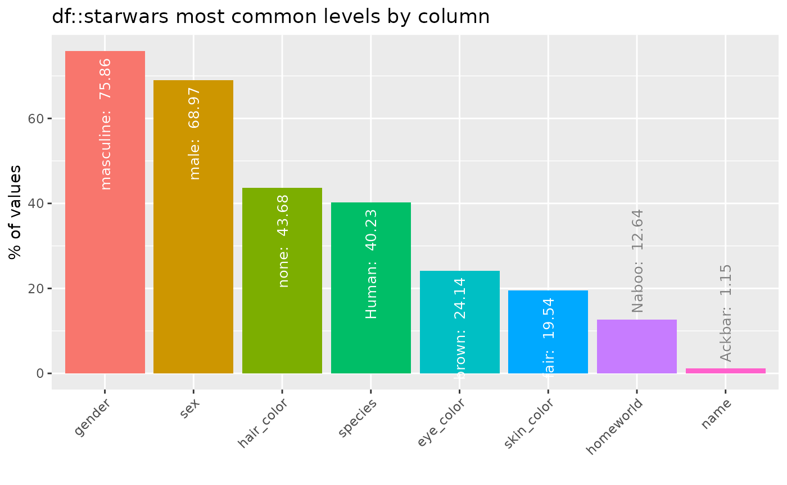
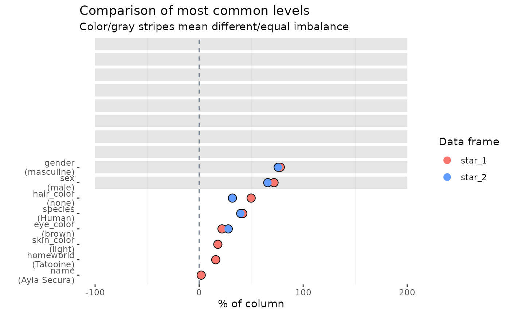

Feature imbalance for categorical columns
Source:vignettes/pkgdown/inspect_imb_examples.Rmd
inspect_imb_examples.RmdIllustrative data: starwars
The examples below make use of the starwars and
storms data from the dplyr package
For illustrating comparisons of dataframes, use the
starwars data and produce two new dataframes
star_1 and star_2 that randomly sample the
rows of the original and drop a couple of columns.
inspect_imb() for a single dataframe
Understanding categorical columns that are dominated by a single
level can be useful. inspect_imb() returns a tibble
containing categorical column names (col_name); the most
frequently occurring categorical level in each column
(value) and pctn & cnt the
percentage and count which the value occurs. The tibble is sorted in
descending order of pcnt.
library(inspectdf)
inspect_imb(starwars)## # A tibble: 8 × 4
## col_name value pcnt cnt
## <chr> <chr> <dbl> <int>
## 1 gender masculine 75.9 66
## 2 sex male 69.0 60
## 3 hair_color none 43.7 38
## 4 species Human 40.2 35
## 5 eye_color brown 24.1 21
## 6 skin_color fair 19.5 17
## 7 homeworld Naboo 12.6 11
## 8 name Ackbar 1.15 1A barplot is printed by passing the result to the
show_plot() function:
inspect_imb(starwars) %>% show_plot()
inspect_imb() for two dataframes
When a second dataframe is provided, inspect_imb()
returns a tibble that compares the frequency of the most common
categorical values of the first dataframe to those in the second. The
p_value column contains a measure of evidence for whether
the true frequencies are equal or not.
inspect_imb(star_1, star_2)## # A tibble: 8 × 7
## col_name value pcnt_1 cnt_1 pcnt_2 cnt_2 p_value
## <chr> <chr> <dbl> <int> <dbl> <int> <dbl>
## 1 gender masculine 78 39 76 38 1
## 2 sex male 72 36 66 33 0.665
## 3 hair_color none 50 25 32 16 0.104
## 4 species Human 42 21 40 20 1.000
## 5 eye_color brown 22 11 28 14 0.644
## 6 skin_color light 18 9 NA NA NA
## 7 homeworld Tatooine 16 8 NA NA NA
## 8 name Ayla Secura 2 1 NA NA NA
inspect_imb(star_1, star_2) %>% show_plot()
- Smaller
p_valueindicates stronger evidence against the null hypothesis that the true frequency of the most common values is the same. - The visualisation illustrates the significance of the difference
using a coloured bar overlay. Orange bars indicate evidence of equality
of the imbalance, while blue bars indicate inequality. If a
p_valuecannot be calculated, no coloured bar is shown. - The significance level can be specified using the
alphaargument toinspect_imb(). The default isalpha = 0.05.